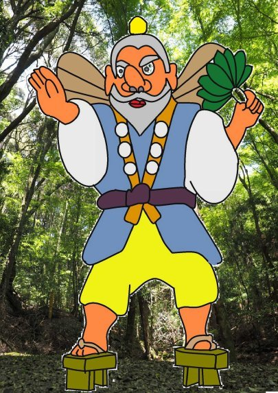
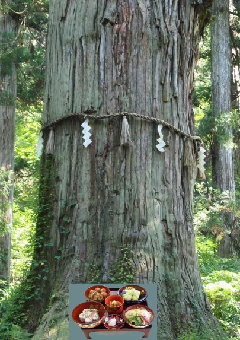
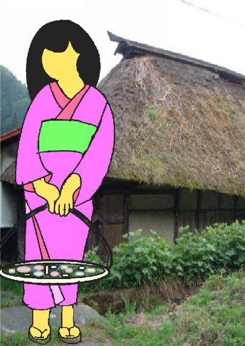
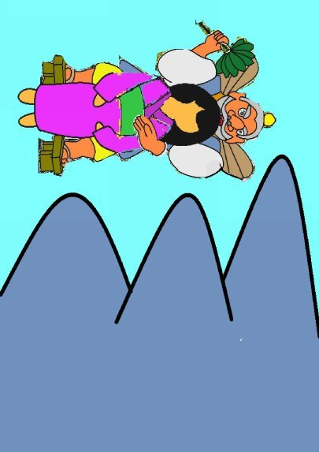
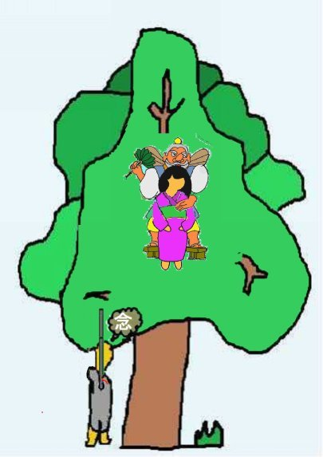

| ⑨大天狗 | |
| 深川龍 | |
| UNKNOWN (2016) | |
第九話
三重縣と滋賀縣の県境に跨がる鈴鹿山脈の主峰の一つ、釈迦ヶ岳に真っ赤な大きな鼻の大天狗が移り住んできたのじゃった。何でも都の北にある鞍馬山に住んでおった天狗じゃったそうな。
ふつう、天狗は樹齢百年を越すような松や杉の木の上に住んで居ったから下から見上げても滅多に見ることは出来なんだ。ところが、この大天狗は鉄の二枚歯の下駄をがらんがらんと鳴らして村里まで下りてきたんじゃった。それだけならまだ良いのじゃったが、この大天狗、

大きな団扇を振り回しては大風を巻き起こしたんじゃ。稲は倒れるし、藁葺き屋根は吹っ飛ぶし、村人は困り果てておった。
「どうすりゃ、ええかのう。」
寄り合いをして相談したがなかなか良い案が出なかった。村長が寄り合いの衆を見回した。
「大天狗は神通力を持っておる。お供えをして暴れぬようにお願いをするより仕方がなかろう。」
村長の発言で相談がまとまり村役の衆がたんまりとお供えを背に載せた牛をひき連れて大天狗の住む釈迦ヶ岳に出かけたのじゃ。もちろん、途中からは急な坂道になるので担い棒で運んだものじゃった。

「大天狗様、月に一度必ずお供えを持ってまいりますから、これからはどうぞ、村には下りておいでにならぬようにお願い申します。」
村役の衆は釈迦ヶ岳で一番古い杉の木の前に来てお願いをしたのじゃった。
「村の者共、それは大義じゃった。じゃが、それだけでは足りぬ。娘を一人連れてくるのじゃ。わしの身の回りの世話をさせるためにな。」
村役の衆は村に戻って相談したが誰の娘を大天狗に差し出すか決まらなんだ。そしたらまたぞろ、この大天狗が村に下りてきたんじゃ。村長は大天狗に向かって言ったもんじゃ。
「大天狗様、都には器量よしの娘たちがたんとおるかも知れませぬが、田舎には大天狗様のおめがねにかなう娘はおりませぬ。よってお連れするわけにはまいりませなんだ。」
ところがその時、都合が悪いことに村一番の器量よしと評判のお志乃という娘がこの寄り合いの場所にやって来たのじゃった。
「皆の衆にお茶をお出しするようにおっかあに言いつかりました。」
大天狗はこの娘を見て言った。

「おお、おまえは何と器量よしの娘じゃ。おまえのような器量よしの娘は都にも滅多におらぬ。連れてまいるぞ。」
その娘はたまたま大天狗に出会ってしまったのが運の尽きじゃった。大天狗は娘の手を掴むと釈迦ヶ岳で一番高い杉の木の上まで連れて行ってしまったのじゃった。
悲嘆にくれた娘の両親は釈迦ヶ岳で一番高い杉の前まで来ると下から大天狗に向かって膝まづいて頼んだんじゃ。
「一人娘のお志乃を返してくだされ。」
空に轟くような大天狗の声が降ってきた。
「お志乃はわしがもらった。あきらめて帰れ。」

杉の木の上からは微かに一人娘のお志乃のすすり泣きの声が聞こえておった。
偶然と言えば偶然じゃった。ちょうど、そこを通りがかったのが鉄砲を持ったお坊さんじゃった。
「大天狗、このように娘御のご両親がお願いしておらるるのが聞こえぬか。聞こえねばこの大鉄砲でそなたを撃ち落としてやるがよいか。」
すると、大天狗の声がまたもがらんがらんと空から降ってきた。
「わしの体に生臭坊主の鉄砲の弾などあたるもんか。」
大天狗の住む所は釈迦ヶ岳で一番高い杉の木の上じゃったから天空にも届くほどの高さじゃった。火縄銃の弾が届くとはとても思われなんだ。
「わたしは仏陀伽耶で修行をいたし数々の法力を得た杉谷善住坊と申す者じゃ。また、この鉄砲は西班牙と云う国の王が持っていたという二ッ玉の鉄炮じゃ。わたしの法力とこの二ッ玉の鉄砲を使えば必ずそなたを撃つことが出来る。娘を返さねば本当に撃つが良いか。」
大天狗は善住坊の言葉を一笑に付した。
「はっはっは、坊主の戯言など真に受けるもんか。撃てるものなら撃ってみよ。」
お坊さんも其処まで言われれば鉄砲を撃たざるを得なくなったんじゃ。じゃが、娘の親は弾が届くにしても大

天狗でなくて娘に当たったらどうしようかと気をもんだのじゃった。
「わしらの娘にあたって、娘が死ぬるようなことになっては困ります。」
善住坊は娘の両親に言った。
「心配いたすな。わたしの二ッ玉の鉄砲は百発百中じゃ。大天狗の鼻っ柱を折って懲らしめてやろう。」
お坊さんは釈迦ヶ岳で一番高い杉の木の上目がけて少しでも高く弾が飛ぶように背伸びしながら鉄砲を放ったんじゃった。鉄砲の弾は重なる杉の葉をすり抜けて見事に大天狗の鼻を撃ち落とした。
そしたら鼻っ柱を折られた大天狗は低くなった鼻を押さえながら西の方に飛んでいった。すると、娘が空からふわっと降るように落ちてきたんじゃった。お坊さんは娘を両腕で受け止めなされたんじゃった。このお坊さまがまたまたうつくしいお方でな。娘は命を助けてくれたお坊さんが好きになってしもうたのじゃが、お坊さまは妻を娶れぬと言われて、そのままどこかに行ってしまわれたそうじゃった。 (完）
深川龍の
歴史の女シリーズ⑤
もお読みください。
- 1 -